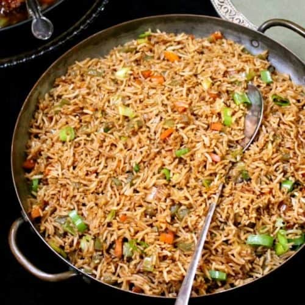

Alex's Fried Rice

This is a family favouirte, and is a quick and versatile way of using up any leftovers you may have in the fridge. Easily customisable, you can easily replace the protein to cater to vegetarian or vegan diets. NOTE Although you can use fresh rice, I highly reccomend using day old rice instead so that it turns out dry and crispy insead of soft and soggy.
Ingredients:
Fried Rice Ingredients
- 1 cup of day old rice (We prefer Rooster brand jasmine rice, but any leftovers will do)
- 2 eggs
- Around 4 tbsp cooking oil
- 3-4 cloves of garlic
- 1 chicken breast previously cooked (This can be switched with an alternative such as beef or tofu, or omitted completely if you want just egg fried rice)
- 1/2 cup vegetables (If from frozen, make sure they're thawed and dry)
- 1/2 tsp. sugar
- 1/4 tsp. MSG
- 1-2 tbsp. soy sauce
- 1 onion diced
Garnish:
- 1-2 green onion stalks
- Toasted sesame seeds
- Siracha optional
Before you start:
Your wok should be hot and ready to cook right away. Gather and prepare your ingredients before heating the wok so you're able to add them without burning anyting.
Steps:
- Add oil to your wok and heat on high until oil is shimmering.
- Add eggs. Oil should be hot enough that they start making curds immediately.
- As eggs firm up, add your garlic and keep stirring until fragrant.
- Add your rice and keep stirring to prevent sticking and burning.
- Add in your sugar and MSG, you don't need much of either. It enhances and balances the taste.
- Fry until you smell the rice cooking and the grains are shiny.
- Add the protein and stir.
- Add the veggies and stir.
- Add the soy sauce and stir.
- Add the onion and stir
- Plate in a deep bowl and garnish!